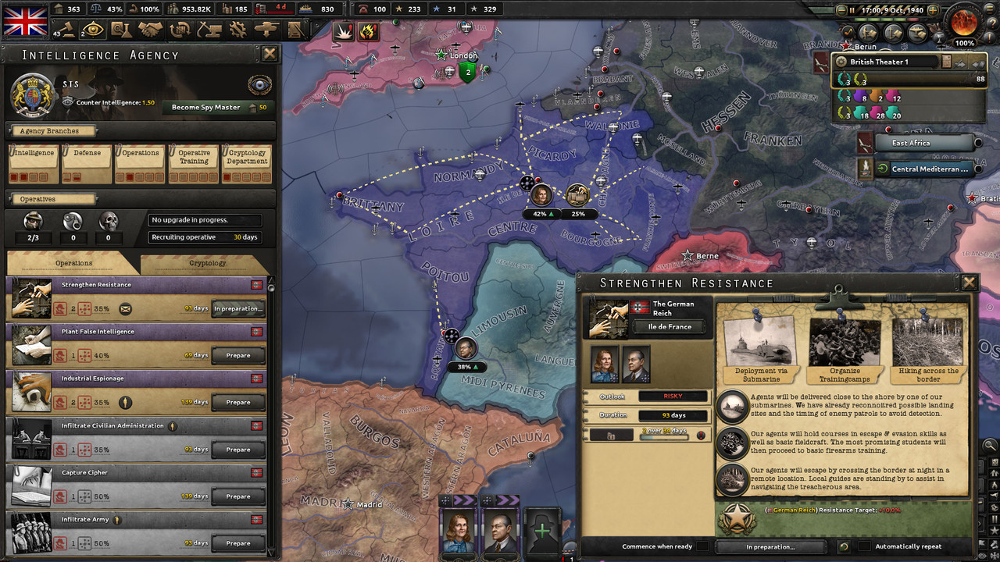
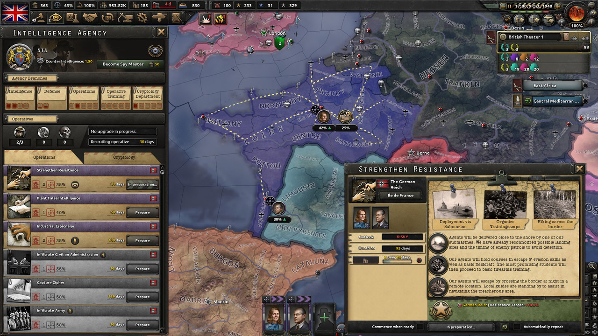

Hearts of Iron IV
¿Quieres ser un dictador militar o un baluarte de la democracia?
descargar- Diplomacia
- Guerra
- Alianzas
- Industria
- Estrategia
- Investigación
- Producción
- Política
- Logística
- Comercio
- Ideologías
- Tecnología
- Economía
- Operaciones
- Guerra Naval
Lo que puedes esperar de nosotros:
Nos enfocamos en ofrecer claros conocimientos estratégicos, contexto histórico y detalladas guías de juego. Al priorizar la accesibilidad, aseguramos que jugadores de todos los niveles puedan sumergirse completamente en cada campaña.
- Gestión de Naciones: Maniobras políticas, estabilidad económica y dirección ideológica.
- Estrategia Militar: Tácticas de primera línea, asignación de recursos y avances tecnológicos.
- Juego Diplomático y Cooperativo: Forjar alianzas, acuerdos comerciales y operaciones conjuntas con otros jugadores.
Con años de experiencia analizando estrategias, comprendiendo complejidades históricas y explorando diversos estilos de juego, te ofrecemos una guía completa para dominar Hearts of Iron IV.
Nuestro objetivo es ayudarte a crear historias inolvidables en el escenario global.
Capturas de pantalla del juego

 

Inspiraciones históricas


Reseñas de Jugadores

Venenum
"Hearts of Iron IV" ofrece un sandbox estratégico increíblemente profundo ambientado en la Segunda Guerra Mundial. Cada decisión—ya sea alinearse con facciones poderosas o forjar un nuevo camino ideológico—se siente significativa. Me encontré constantemente ajustando mis líneas de producción, investigando tecnología de punta y planificando invasiones cuidadosamente. Es una experiencia de gran estrategia que recompensa la paciencia y la previsión, dejándome ansioso por iniciar otra campaña en cuanto una termina."

Kraken
HOI4 trasciende los límites tradicionales de los RTS. La complejidad de gestionar relaciones diplomáticas, acuerdos comerciales y crecimiento industrial puede ser intimidante al principio, pero rápidamente se convierte en un rompecabezas adictivo. Equilibrar las presiones políticas y las demandas de la producción de guerra, nunca sentí que hubiera un camino "simple". Es una obra maestra para los entusiastas de la estrategia que les encanta experimentar con historias alternativas y maniobras geopolíticas.

Partizan
"Si alguna vez has querido reescribir la historia, "Hearts of Iron IV" es tu lienzo en blanco. Elegir convertir una nación menor en una superpotencia global o mantener a flote una facción mayor bajo fuertes sanciones e invasiones es emocionante. La abundancia de mods y la comunidad activa solo enriquecen la experiencia. No es solo un juego; es una plataforma en evolución para la narración y el dominio estratégico."
Características Clave
Precisión Histórica y Flexibilidad
Revive o altera grandes conflictos globales con detallados árboles de enfoque específicos por nación que te permiten moldear el destino de tu país elegido.
Árboles de Tecnología e Investigación Profundos
Mantente a la vanguardia en la carrera armamentista invirtiendo en nuevos equipos, doctrinas y tecnologías que pueden cambiar el rumbo de la guerra.
Multijugador Inmersivo
Únete o desafía a otros estrategas en línea. Forma alianzas, haz enemigos y orquesta complejas estrategias globales en tiempo real.
Soporte Robusto para Mods
Expande el universo del juego con contenido creado por la comunidad. Líneas de tiempo alternativas, nuevas unidades y conversiones totales mantienen el juego fresco.